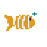
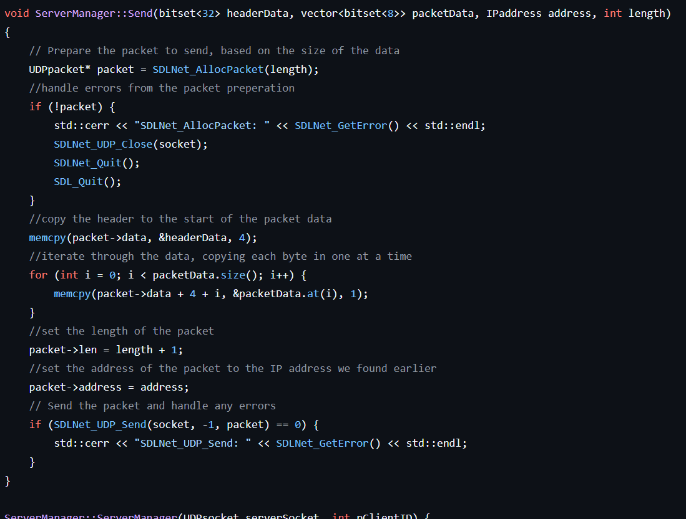

Tidal Tussle
A small game demo about fighting enemies off of a ship, utilising custom UDP networking with SDL




Tidal Tussle was a game I made for my third year Multiplayer Games Development university module. I was tasked with creating a game using either Unity, Unreal, or C++ with SDL that implemented networking technologies. I decided to use C++ with SDL and first researched different networking protocols available to me. This research led me to choose UDP over TCP as my protocol. I recieved a 95% grade for this project and its associated report.